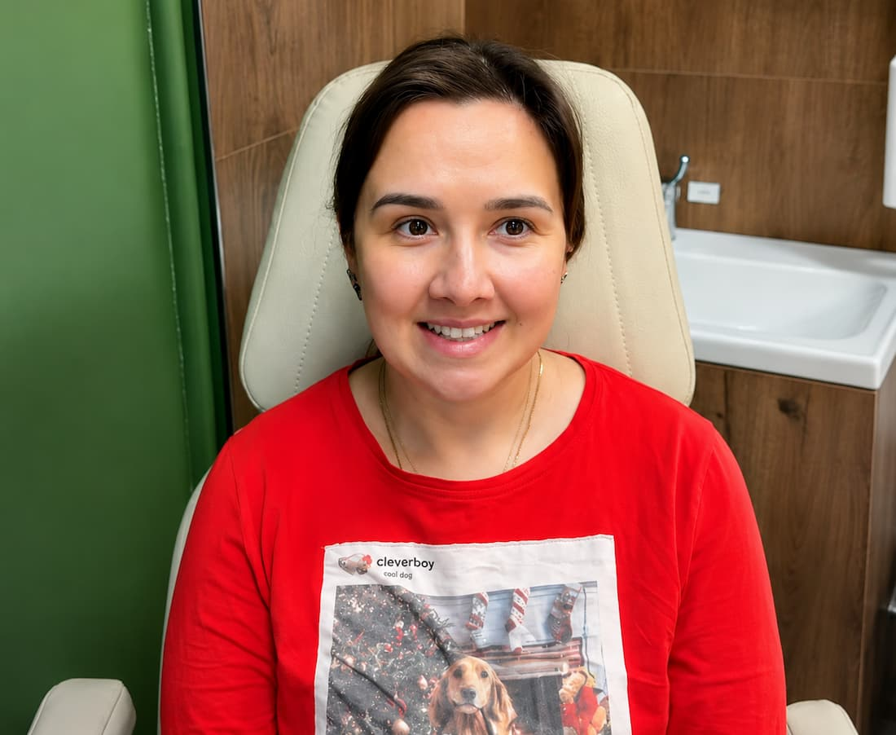
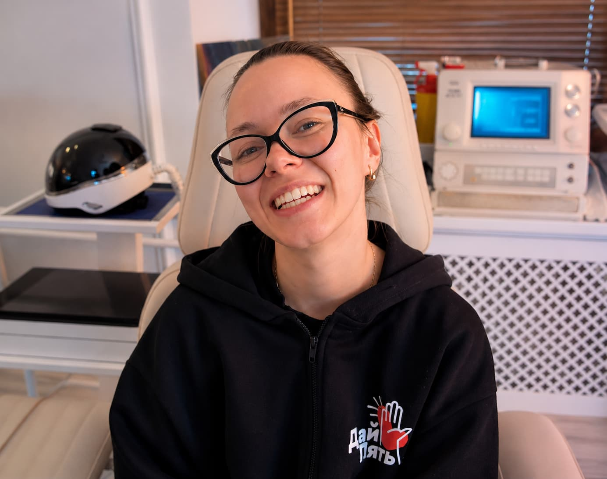
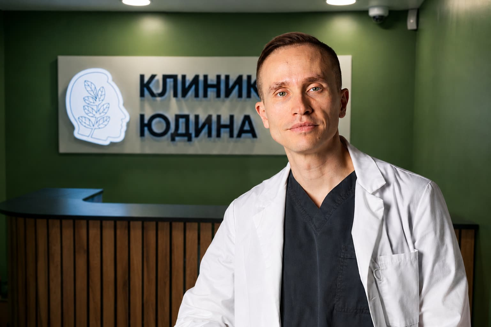

Конференция
Междисциплинарный разбор патологии лицевого нерва
Дата · город · количество участников · ключевые спикеры · ссылка на программу и фотоотчёт.
Хронология мероприятий, научных и образовательных проектов. В финальной версии публикуются только факты, даты и показатели, подтверждённые ассоциацией.
Карточки ниже показывают формат подачи. Реальные даты, программы и фотографии передаются заказчиком.

Дата · город · количество участников · ключевые спикеры · ссылка на программу и фотоотчёт.

Краткое описание навыков, полученных участниками, и подтверждающие материалы.

Цель, партнёры, текущий статус, публикации и следующий этап.
Название, авторы, год, версия и ссылка на документ.
Тема, спикер, длительность и уровень доступа.
Библиографические данные и ссылка на источник.


Для каждого события: дата, формат, аудитория, программа, стоимость или условия участия, кнопка регистрации.
Анонс после утверждения программы.
Для членов ассоциации.
Очный формат, ограниченная группа.
Дипломированные врачи и научные сотрудники, чья работа связана с диагностикой, лечением и реабилитацией патологии лицевого нерва. Окончательные критерии утверждаются ассоциацией.
Заполнить форму обращения с описанием организации, цели и предполагаемого формата сотрудничества.
Открытые материалы публикуются на сайте; условия доступа к профессиональной библиотеке указываются отдельно.